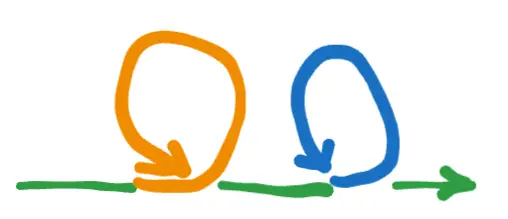

Intro/context:
- It feels very disorienting to become “un-hypnotised” from my main story
- I quickly fell under the spell of another story (“I guess I should work part time!”), and then Gemini Socrates woke me up from that too
- (See Gemini Socrates - part-time vs full-time work)
- See also the first part of Nadia’s “The Tyranny of Ideas”
- I’ve been reflecting on how this all connects to my enneagram type
- So like… now what???
0. Excursus on “Anticipatio Mentis” vs “Interpretario Naturae”
- (These are Francis Bacon concepts)
- Gemini:
- Anticipatio Mentis (Anticipation of the Mind): This is a "rash and premature" method where the mind leaps from a few sensory observations and particular instances to the most general axioms or principles. From these hastily formed generalisations, one then deduces intermediate axioms to prove that the initial generalisation was correct. Bacon saw this as the common, but incorrect, logical method of his time, believing it led to dogma and error because it was based on insufficient evidence and inherent biases of the mind.
- Interpretatio Naturae (Interpretation of Nature): This is the methodical and gradual process Bacon advocated for. It involves deriving axioms from sense experience and particular facts in a slow, upward climb to reach the most general conclusions last. This systematic approach is designed to restrain the mind's tendency to jump to conclusions and to build knowledge on a solid foundation of empirical evidence.
- The point is that I think I’ve been the king of Anticipatio Mentis, and now I really want to try and cultivate Interpretatio Naturae
- (Not saying this in a self-deprecating way → this is the natural state of the mind! Intellectus sibi permissus, “the mind left to itself”)
1. The value of embracing and foregrounding uncertainty
- I think Socrates would argue that being uncertain is kind of the point
- When we tell ourselves that we’re certain of something, unless it’s a Popperian form of truth, whereby we have tried a whole bunch of ways to refute it and yet still can’t, then we’re probably deluded ourselves
- “What is the likelihood that this thing that I’m saying is true, is true, despite the fact that I haven’t really investigated it”, vs “what is the chance that Socrates could deflate this belief in like 2 minutes flat”, innit
- In the Anticipatio Mentis way - we’re being rash and premature, we’re falling for dogma
- I think it’s probably ok to ~delude yourself, if you know you’re doing it
- (There’s a Cate Hall thing here of choosing what stories to believe, for example)
- Manifesting, astrology girlies, etc. “Focus on what you want to see more of” etc
- But if you’re operating from a place of “I know X is true, so therefore I’ll do Y”, you may be in for a rude awakening, when at some point you realise that X wasn’t true. You may regret doing Y!
I know that I don’t know what I’m doing (and it’s better this way)
- Around Christmas time, I made my first ever youtube video (actually not quite true, but the first one in years), where I rambled about how I didn’t know what I was doing with my life, and felt very lost
- Then, I grasped at the story of “I know, I’ll make music and youtube videos, that can be my thing!”
- Which worked for a while, until it stopped working
- Then, I did reckon with how confused I’ve been; I did a rationality sprint, and a personal values sprint, and then landed on some values, with some empirical backing, and embarked on the “I want to be a high-impact leader!” story
- (The error here was in not looking for other stories, other frames, ways I might be wrong)
A shitty diagram

- The green line represents being uncertain (should’ve been red, smh)
- Then, I’m possessed by a story, and follow it for a few months (a coloured loop)
- Then, I realise that maybe it was wrong, and I return to the green line, kind of back at square one (although I guess not really)
- (Now with less money in my bank account)
- Then, I’m possessed by another story
- Etc
- This may not be terrible, and it may be pretty natural (but also, suboptimal)
- I learn more about myself with each loop, I have a good time (it was really rewarding making my music and youtube videos, and I nearly landed some really great roles during this job hunting sprint).
- I’ve made a bunch of stuff, I’ve kept moving along, I’ve iterated and updated and got involved in new stuff (e.g., Open Research Institute, Socrates, going to EAG)
2. So what’s the problem?
Single-tasking
- I think one downstream problem of certainty is that it precludes the option to consider and investigate multiple stories in parallel
- For example, job hunting, but without the feeling of “this has to be it, I absolutely have to land a great job!!!”
- E.g., imagine job hunting whilst also making a video a week, for fun
- Also, I imagine I could have applied for many more jobs, by holding the story more lightly. By being ok with “I don’t know if this job is ideal or if I’m likely to get it, but I’ll send a quick application anyway”, vs “I can only apply for ones that I’m sure about”
- Dabbling in things, holding things lightly
All-or-nothing
- Maybe this is the same point, but yeah, it feels like for each story I’ve operating under recently (music/youtube, “full time really great EA job”), I've wanted to commit as much of my time as possible to it, and as such I’ve let friendships and a balanced life fall by the wayside.
- Cancelling on friends, going monk mode because “I can’t relax until I’ve successfully made this happen”. “I can’t spend time just hanging out because I have so much music stuff to learn”, for example
- (I feel so short on time, always!)
”I don’t want to do things cheaply b/c I need to signal my commitment”
- For example, when I was following my youtube/music story, ==I actually felt like I had to spend a bunch of money on stuff==, like equipment, the best version of Ableton Live, etc, to show that I was really committed.
- Like, to do the cheapskate thing, to use free software and shitty equipment, would signal that I’m not taking this seriously enough, that I’m one foot out the door already, and that’s like, bad juju.
- Like,
- “I’m trying to be a successful musician, so of course I’ve buy Ableton Live Suite! I can't settle for anything less!”
- vs
- “I’m just exploring and poking around, so I think I’ll start with this open source software, keep my costs low, just dabble and enjoy”
3. Benefits of operating from a place of uncertainty
Experimental mindset
- Really, this brings me back to my rationality sprint of Jan-Feb of this year. The importance of the experimental mindset, of running lots of little tests, or testing hypotheses
- I have this in my “tactics” template doc, but it never rang true for me, because it clashes so much with my "the point, and the path to being good/excellent, is to deeply commit to something"
- I can apply to more jobs, as I’m not grasping so tightly, hold it lightly, etc. Less deeply committed to “I have to find the absolute perfect thing that fulfils
my destiny” → “I don’t know what exact job I’m after, this role and type seems pretty good, I can do this whilst dabbling in other stuff” - I can consider full time work, OR part time work, OR coaching, OR returning to youtube, or a selection of all of these
- I don’t know which of these is “correct”, maybe none of them. Maybe it’ll take me years to figure out?
Being micro-flakey to avoid being macro-flakey
- A fear from shifting to being more “experimental”, more “Interpreatio Naturae”, is that it’ll make me more flakey. If I lose my certainty, my unifying and clarifying stories, then how will I orient, how will I commit?
- But it feels like actually, I’m be more micro-flakey and less macro-flakey
- At the moment, I’ve committed to some grand unifying vision, and then after 3-6 months, pivoted hard away from it.
- So the number of pivots per year isn’t a big number, but the pivots themselves are huge
- Vs, to be micro-flakey
- To run lots of small experiments, to not commit to anything large until I’ve got a good amount of preliminary evidence
- So, the number of pivots may be much higher, but the cumulative “size” or “cost” of the pivots may be much less
- E.g., ~4 months of full time focus and dedication to learning to make music, and making youtube videos, then a single HUGE pivot away from this, where everything I learned is now left to gather dust
A problem - employers want certainty?
- Employers may not like the sound of someone who is keeping their own uncertainty front-of-mind
- You’d rather have someone who was like “oh yes I’m devoted to global health, I definitely want to spend my whole career here” vs “I’m very aware of my own ignorance and flakiness”, right?
- But hey… better to be honest. And perhaps it’ll allow for things like, taking a part time job with a 3 month initial contract, to see how it feels. Or, doing a week of work for free for a startup, as a win/win for both parties.
- “Employers want certainty” - they may also want honesty and good epistemics. So, better to live in the uncertainty for a while, battle it, and see where you get, than live in fake certainty, which is very brittle
To be aware of your uncertainty is to be antifragile?
- Vs to be living with (unrealised, to you) false certainty is to be fragile
Appendix - Socrates and the soul
- Gemini:
Socrates believed that the care of the soul was the most important human endeavour. For him, the soul was not merely a life-force but the essence of one’s being, identified with intelligence, reason, and one’s character. He famously stated that “the unexamined life is not worth living,” encapsulating his approach to soul care.
Here’s a breakdown of what Socrates would say you should do:
-
Prioritise the Soul Above All Else: Socrates urged people to make their “first and chief concern” not for their bodies, wealth, or reputation, but for “the greatest improvement of the soul.” He believed that our true self is our soul, and its state determines the quality of our life.
-
Seek Knowledge and Wisdom (Especially Self-Knowledge): For Socrates, caring for the soul was intrinsically linked to acquiring knowledge of what is truly good. This isn’t just accumulating facts, but understanding fundamental ethical ideas like virtue, justice, and temperance. The Delphic oracle’s command to “know thyself” was central to his philosophy, meaning understanding the purpose of being human and the true nature of one’s own soul.
-
Practise the Socratic Method (Elenchus): Socrates engaged in relentless questioning and cross-examination (the Socratic method or elenchus) with others, and this was also a method for self-examination. By scrutinising one’s own beliefs, assumptions, and values, one could expose ignorance and clear the way for genuine knowledge. This process of open inquiry and reflection was considered the exercise and utilisation of the soul itself.
-
Cultivate Virtue: Socrates held that “virtue is knowledge.” He believed that if someone truly knows what is good, they will act virtuously. Therefore, by seeking knowledge and understanding, one naturally becomes virtuous. He saw evil as a result of ignorance – people do wrong because they are mistaken about what is truly beneficial for their soul.
-
Achieve Inner Harmony and Tranquillity: By gaining rational control over one’s desires and appetites and aligning the different parts of the soul, one can achieve a state of inner tranquillity. This harmonious state, governed by reason, leads to true happiness (eudaimonia).
-
Recognise the Immortality of the Soul: While the body is mortal, Socrates believed the soul is immortal. This belief reinforced the importance of caring for the soul, as its state would determine its fate after death. He saw materialism and pleasure-seeking as things that pollute and weigh down the soul.
In essence, Socrates believed that to care for your soul, you must devote yourself to the lifelong pursuit of wisdom and virtue through rigorous self-examination and rational inquiry, always prioritising the internal state of your being over external possessions or fleeting pleasures.
-
“uncertainty is painful” → Handling my feelings about doing an FRI work test
-